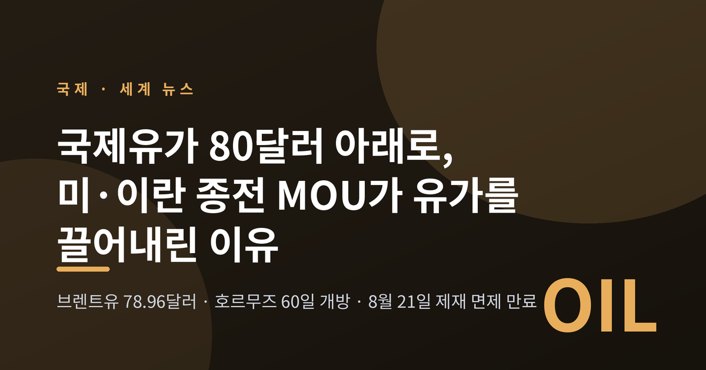
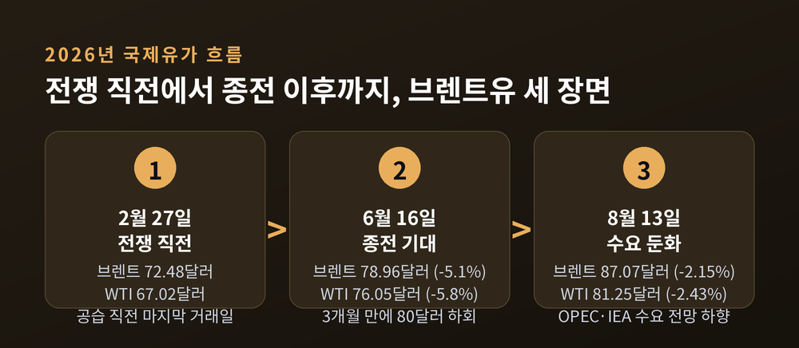
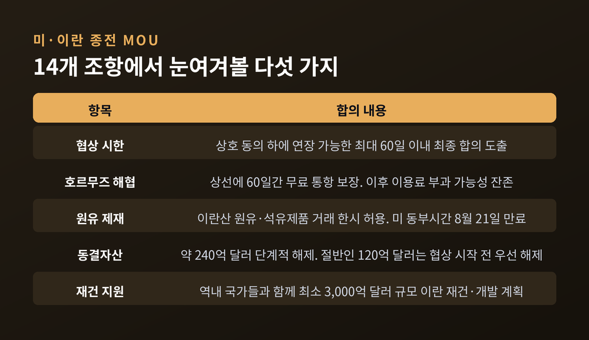
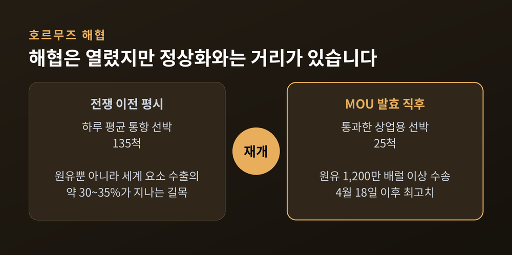
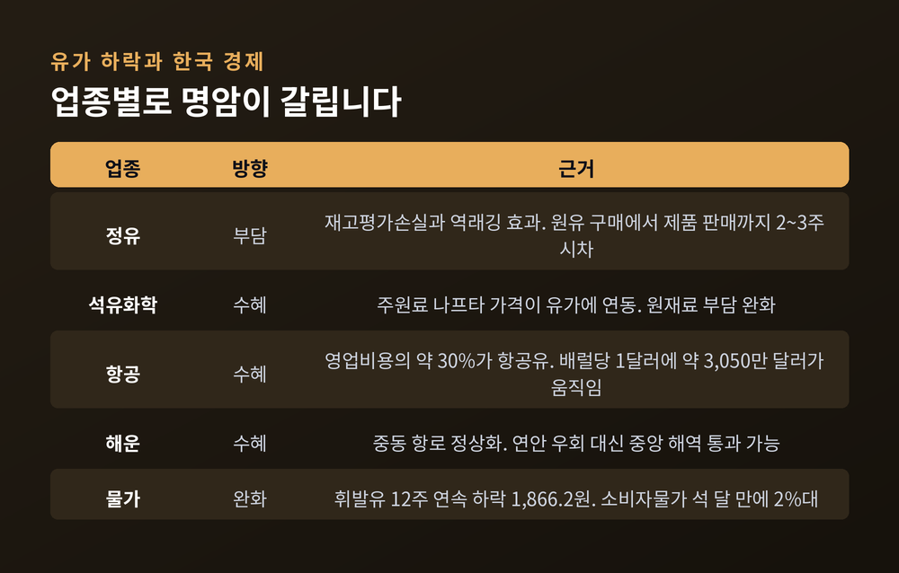
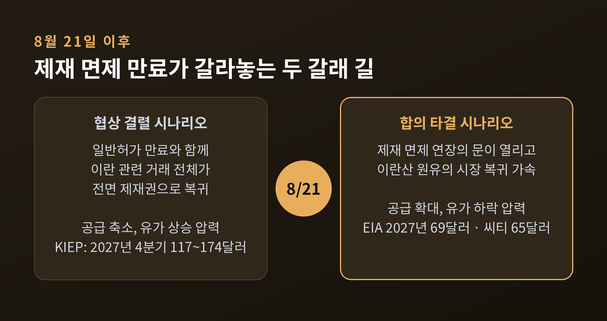

국제유가 80달러 아래로, 미·이란 종전 MOU가 유가를 끌어내린 이유
이번 글에서는 미국과 이란의 종전 양해각서(MOU) 이후 국제유가가 어떻게 움직였는지 정리해 보겠습니다. 이란산 원유 제재 면제와 호르무즈 해협 60일 개방이 시장에 어떤 신호를 보냈는지, 그리고 그 파장이 한국 경제 어디까지 닿는지를 함께 살펴봅니다.
세 줄 요약
- 2026년 6월 16일 브렌트유가 배럴당 78.96달러로 마감하며 3개월 만에 80달러 아래로 내려왔습니다. 원인은 미·이란 종전 합의와 이란산 원유 제재 면제 전망입니다.
- 8월 현재 브렌트유는 87달러 안팎으로 되돌아왔습니다. 다만 시장의 관심사는 '전쟁 리스크'에서 '공급과잉'으로 이미 옮겨갔습니다.
- 60일 협상 시한이자 미국 제재 면제(일반허가 GL X)의 만료일인 8월 21일이 다음 분기점입니다.

6월 16일, 하루 만에 5%가 빠졌습니다
숫자부터 보겠습니다.
2026년 6월 16일 현지시간, ICE선물거래소에서 8월물 브렌트유는 전 거래일보다 5.1% 내린 배럴당 78.96달러에 거래를 마쳤습니다. 브렌트유가 80달러선 아래로 내려온 것은 3월 초 이후 약 3개월 만이었습니다. 같은 날 뉴욕상업거래소에서 7월물 서부텍사스산원유(WTI)도 5.8% 하락한 76.05달러로 마감했습니다.
하루짜리 사건은 아니었습니다. 종전 합의 기대가 반영되기 시작한 6월 11일 이후 4거래일 연속 내림세였습니다.
낙폭을 키운 결정타는 제재였습니다. 미국이 종전 합의 서명 직후 이란산 원유와 석유제품 판매에 대한 제재를 일부 면제할 것이라는 소식이 전해지자, 시장은 곧바로 '공급이 늘어난다'는 쪽으로 기울었습니다. 월스트리트저널은 미 정부가 6월 19일 예정된 MOU 체결 이후 이란의 석유 수출을 허용하는 방향으로 제재 완화를 검토 중이라고 전했습니다.
다만 오해는 없어야 합니다. 그 78.96달러조차 전쟁 이전보다는 높은 수준이었습니다. 미국·이스라엘의 이란 공습 직전 마지막 거래일인 2월 27일 브렌트유는 72.48달러, WTI는 67.02달러였습니다. 6월의 급락 이후에도 브렌트유는 약 9%, WTI는 약 13% 위에 있었던 셈입니다.

시장의 화두가 '전쟁'에서 '과잉'으로 옮겨갔습니다
예전엔 중동에서 총성이 울리면 유가가 뛰었습니다. 지금은 조금 다릅니다. 시장은 전쟁의 끝이 아니라 공급의 복귀 속도를 보고 가격을 매기고 있습니다.
가장 선명한 증거는 미국에서 나왔습니다. 2026년 7월 미국의 원유 수출은 하루 366만 배럴로 8개월 만의 최저치를 기록했습니다. 선박 추적 데이터를 근거로 한 집계입니다. 이유는 단순합니다. 중동산 원유가 다시 시장에 풀리면서, 봉쇄 기간에 그 빈자리를 메우던 미국산 배럴의 수요가 줄어든 것입니다.
호르무즈가 막혔을 때 미국산 원유 수출은 늘었습니다. 해협이 열리자 그 자리를 중동산이 되찾았습니다. 미국의 수출 감소가 곧 중동 공급 회복의 반증인 셈입니다.
산유국들의 움직임도 같은 방향입니다. OPEC+는 7월 화상회의에서 8월 생산량을 7월 대비 하루 18만 8,000배럴 늘리기로 했습니다. 다섯 달 연속 증산입니다.
수요 쪽 전망은 반대로 내려갔습니다. OPEC은 8월 월간보고서에서 2026년 세계 원유 수요 증가 전망을 하루 58만 배럴로 낮췄습니다. 국제에너지기구(IEA)는 올해 원유 소비가 하루 160만 배럴 감소할 것으로 봤는데, 7월 전망보다 하루 51만 배럴 더 줄어든 수치입니다. 8월 13일 브렌트유가 2.15% 내린 87.07달러, WTI가 2.43% 내린 81.25달러로 마감한 배경입니다.
물론 모두가 동의하는 것은 아닙니다. OPEC은 6월 19일 "원유 공급과잉은 없다"며 IEA를 정면으로 반박한 바 있습니다. 같은 데이터를 놓고 해석이 갈리는 국면입니다.
종전 MOU를 뜯어보면, 핵심은 '60일'입니다
미국과 이란의 종전 양해각서 전문은 6월 17일 공개됐습니다. 총 14개 조항입니다.
이란 메흐르 통신에 따르면 군사·안보 5개, 경제·금융 3개, 핵 문제와 향후 협정 가이드라인 3개, 이행 절차와 조건 3개로 짜여 있습니다. 그리고 이 문서의 성격을 규정하는 문장이 하나 들어 있습니다. 양국이 상호 동의 하에 연장 가능한 최대 60일 이내에 최종 합의를 도출한다는 조항입니다.
즉 MOU는 종착점이 아니라 본협상의 출발 신호였습니다.
에너지 쪽 합의는 이렇습니다. 호르무즈 해협은 상선에 60일간 무료 통항이 보장됩니다. 뒤집어 말하면 60일 이후에는 해협 이용료가 부과될 여지가 남아 있습니다. 이란은 MOU 이행 즉시 약 240억 달러, 우리 돈 36조원 규모의 동결자금에 접근할 수 있게 되며, 이 가운데 절반인 120억 달러는 최종 협상 시작 전에 먼저 풀립니다. 여기에 역내 국가들과 함께 최소 3,000억 달러 규모의 이란 재건·개발 계획을 마련한다는 내용도 담겼습니다.
제재 면제는 문서가 아니라 실제 법적 조치로 이어졌습니다. 미 재무부 해외자산통제국(OFAC)은 이란산 원유·석유화학·석유제품의 판매·운송·보험·금융 거래를 한시 허용하는 일반허가 제X호를 발급했습니다. 달러 결제도 포함됩니다. 만료는 미 동부시간 8월 21일 0시 1분입니다. 다만 이란과 북한, 이란과 쿠바 사이의 거래는 여전히 차단됩니다.
이 일반허가는 종전 합의 이후 실제로 법적 효력이 생긴 유일한 제재 완화 조치입니다. 협상이 타결되면 연장의 문이 열리고, 결렬되면 이란 관련 거래 전체가 다시 전면 제재권으로 돌아갑니다.

해협은 열렸습니다. 다만 '정상화'와는 거리가 있습니다
호르무즈가 다시 열렸다는 소식은 사실입니다. 그러나 규모를 보면 이야기가 조금 달라집니다.
MOU 발효 직후 상업용 선박 25척이 해협을 통과했습니다. 4월 18일 이후 최고치였고, 원유 1,200만 배럴 이상이 실려 있었습니다. 그런데 전쟁 전 하루 평균 통항 선박은 135척이었습니다. 회복이라기보다는 재개에 가까운 수치입니다.
이란 국영석유공사 대표는 6월 15일 이후 이란 선박들이 원유 2,500만 배럴을 싣고 봉쇄선을 통과했다고 밝혔습니다. 월 수출량의 절반에 육박한다는 설명이었습니다.
산업연구원은 7월 분석에서 신중한 견해를 냈습니다. 긴장이 완화돼도 통항이 곧바로 전쟁 이전 수준으로 돌아가기는 어렵다는 것입니다. 기뢰 제거, 대기 선박 적체 해소, 선복 재배치, 보험 인수 재개에 모두 시간이 필요하기 때문입니다. 이 기관은 올해 말까지 국제유가가 배럴당 70~80달러 범위에서 움직일 가능성을 제시했습니다.
한 가지 덧붙이자면, 호르무즈는 원유만의 길목이 아닙니다. 2020년대 기준으로 세계 요소 수출의 약 30~35%, 암모니아 수출의 약 20~30%가 이 해협을 지납니다. 국제 거래 비료의 최대 30%가 통과하는 통로이기도 합니다. 곡물 가격까지 연결되는 문제입니다.

한국 경제에는 어떻게 닿는가
가장 궁금한 대목일 것입니다. 결론부터 말씀드리면, 업종에 따라 명암이 뚜렷하게 갈립니다.
정유는 오히려 부담입니다. 정유사는 원유를 사서 정제해 제품으로 파는 데 통상 2~3주가 걸립니다. 유가가 오를 때는 싸게 산 재고가 비싸게 평가돼 이익이 생기지만, 내릴 때는 반대로 재고평가손실이 발생합니다. 비싸게 들여온 원유를 낮아진 시세에 맞춰 팔아야 하는 역래깅 효과도 겹칩니다. 2026년 1분기에 SK이노베이션, HD현대오일뱅크, 에쓰오일, GS칼텍스가 고유가 덕에 실적을 크게 개선했지만, 하락 국면에서는 그 반대의 계산서가 돌아옵니다. 정부와 진행 중인 석유 최고가격제 손실 보전 협상도 아직 결론이 나지 않았습니다.
석유화학은 숨통이 트입니다. 주원료인 나프타 가격이 국제유가에 연동되는 구조라, 유가가 안정되면 원재료 부담이 줄어듭니다.
항공은 직접적인 수혜 업종입니다. 항공사는 영업비용의 약 30%를 항공유가 차지합니다. 유가가 배럴당 1달러만 올라도 약 3,050만 달러의 비용이 추가로 발생하는 구조입니다. 반대로 내리면 그만큼 부담이 덜어집니다. 유류할증료가 낮아지면 여름 성수기 해외여행 수요에도 힘이 실릴 수 있습니다.
해운도 마찬가지입니다. 그동안 일부 선박은 안전 확보를 위해 호르무즈 연안에 붙어 다니며 운항 효율이 떨어졌습니다. 상황이 안정되면 평소처럼 중앙 해역을 통과할 수 있게 됩니다. 다만 HMM은 2분기 영업이익이 52% 늘었음에도 상반기 누적으로는 뒷걸음질했습니다. 호르무즈와 홍해는 여전히 변수로 남아 있습니다.
물가는 이미 반응하고 있습니다. 8월 첫째 주 전국 주유소 휘발유 평균 판매가는 리터당 1,866.2원, 경유는 1,849.2원이었습니다. 12주 연속 하락입니다. 서울이 1,909.1원으로 가장 높았고 대구가 1,840.6원으로 가장 낮았습니다. 같은 기간 우리나라 도입 기준인 두바이유는 배럴당 79.5달러였습니다. 휘발유와 경유의 오름폭이 꺾이면서 소비자물가는 석 달 만에 2%대로 내려왔습니다.
산업연구원 분석에 따르면 국제유가가 10% 오를 때 국내 제조업 생산비용은 평균 0.71% 늘어납니다. 석유제품은 6.30%, 화학제품은 1.59%로 업종 간 격차가 큽니다. 유가가 내릴 때는 이 계산이 반대로 작동합니다.
조달 구조도 조용히 바뀌고 있습니다. 한국은 오랫동안 수입 원유의 약 70%를 중동에 의존해 왔습니다. 그런데 2026년 5~7월 도입 비중에서 중동은 48.5%로 내려갔고, 미주 지역이 35.6%까지 올라왔습니다. 전쟁이 강제한 다변화입니다.

같은 합의를 보는 세 개의 시선
국제 문제는 한쪽 이야기만 들으면 그림이 어그러집니다. 세 축의 입장을 나란히 놓겠습니다.
미국은 이란 핵 프로그램에 대한 명확하고 검증 가능한 약속을 먼저 요구합니다. 트럼프 대통령은 8월 10일 이란에 과거 행위에 대한 보상까지 협상 조건으로 제시했습니다. CNN은 이 새로운 요구가 신속한 타결 가능성을 오히려 낮췄다고 분석했습니다. 미 여당 내부에서도 협상안이 공개된 뒤 반발이 나왔다는 보도가 있었습니다.
이란의 입장은 순서가 다릅니다. 제재 완화와 자산 동결 해제의 보장이 먼저라는 것입니다. 최고지도자는 농축 우라늄의 해외 반출을 불허하도록 지시했습니다. 이란 의회 국가안보·외교정책위원장은 우라늄 농축권, 농축우라늄 보유, 호르무즈 해협 주권, 제재 해제를 물러설 수 없는 선으로 제시했습니다. 이란 의회는 공격을 받은 핵시설에 대한 접근을 금지하는 법률까지 통과시켰고, 의회 의장은 국제원자력기구(IAEA) 사찰단이 부셰르 원전과 테헤란 연구용 원자로에만 접근할 수 있다고 못 박았습니다. 같은 MOU 조항을 놓고 양측 해석이 정면으로 부딪히고 있습니다.
사우디아라비아를 비롯한 걸프 국가들의 시선은 또 다릅니다. 이들은 MOU에 이란의 미사일과 무인기, 역내 대리세력에 관한 내용이 빠진 데 대해 불만을 드러냈습니다. 사우디는 이란 재건 투자 참여에 선을 그으며 "신뢰가 먼저 회복돼야 경제협력을 합리적으로 논의할 수 있다"는 조건을 달았습니다. 일부 걸프국은 미국이 역내 안보에서 훨씬 작은 역할을 맡는 미래를 진지하게 검토하며, 튀르키예를 새 무기 공급처로 살피고 있다는 보도도 나왔습니다.
여기에 논쟁적인 사안이 하나 더 얹혔습니다. 미국과 사우디가 평화적 원자력 협력을 위한 123 협정에 서명했는데, 우라늄 농축과 재처리의 영구 포기를 뜻하는 이른바 골드 스탠더드 조항이 빠졌다는 보도입니다. 이란의 농축을 막겠다며 전쟁까지 치른 미국이 사우디에는 다른 잣대를 적용한다는 비판이 제기됐습니다. 이 논란이 이란 핵협상을 더 꼬이게 만들 수 있다는 우려도 함께 나옵니다. 판단은 독자의 몫으로 남기겠습니다.
앞으로 어떻게 될까요
두 개의 시계가 동시에 돌아가고 있습니다. 하나는 60일 핵협상 시한, 다른 하나는 8월 21일 만료되는 제재 면제입니다. 두 시계는 사실상 같은 시각을 가리킵니다.
전망은 기관마다 엇갈립니다.
미국 에너지정보청(EIA)은 8월 단기 에너지전망에서 호르무즈를 통한 원유 흐름이 점차 회복되고 생산 차질 물량 대부분이 2027년 1분기에 복구될 것으로 봤습니다. 브렌트유는 3분기 평균 85달러에서 4분기 78달러로 낮아지고, 2027년에는 연평균 69달러까지 내려간다는 전망입니다. 투자은행 씨티는 8월 7일 3분기 전망을 80달러로 5달러 올리면서도, 4분기 70달러와 2027년 65달러 전망은 그대로 뒀습니다.
반면 대외경제정책연구원(KIEP)의 계산은 결이 다릅니다. 33개국을 포괄하는 GVAR 모형에 세 가지 시나리오를 적용한 결과, 2027년 4분기 유가는 조기 종전 시 90달러, 호르무즈 봉쇄하 장기화 시 117달러, 에너지 시설 타격과 확전 시 174달러로 추정됐습니다. 주목할 점은 세 시나리오 모두에서 전쟁 이전 수준인 배럴당 63달러로는 돌아가지 않는다고 본 대목입니다. 다만 이 숫자들은 단일 전망치가 아니라 조건부 시나리오 분석 결과이며, 174달러는 모형 특성상 하한 추정치로 해석해야 한다는 것이 연구원의 설명입니다.
정리하자면 방향을 가르는 변수는 종전 선언 그 자체가 아닙니다. 공급이 얼마나 빨리 정상으로 돌아오느냐입니다. 통항과 생산이 예상보다 빠르게 회복되면 지정학적 프리미엄이 줄어드는 만큼 하락 압력이 커지고, 지연되거나 시설이 추가로 타격을 받으면 높은 유가가 이어질 수 있습니다.

정리하면 이렇습니다.
6월의 78.96달러는 시장이 전쟁 프리미엄을 걷어낸 순간이었습니다. 8월의 87달러는 그 프리미엄이 완전히 사라진 것은 아니라는 신호입니다. 그 사이에서 시장의 질문은 "전쟁이 끝났는가"에서 "공급이 언제 돌아오는가"로 바뀌었습니다.
"유가를 움직이는 것은 종전 선언이 아니라 배럴이 도착하는 속도입니다."
8월 21일 이후의 그림을 지금 확신할 수 있느냐고 물으신다면, 저는 아직 아니라고 답하겠습니다. 다만 그날 이후 무엇을 확인해야 하는지는 이제 분명해졌다고 생각합니다.
본 글은 공개된 보도와 공공기관 보고서를 정리한 정보성 콘텐츠이며, 특정 자산에 대한 투자 권유나 매매 추천이 아닙니다. 유가와 에너지 가격 전망은 기관마다 전제와 시점이 달라 실제 결과와 크게 달라질 수 있습니다. 투자 판단과 그 결과에 대한 책임은 투자자 본인에게 있습니다.